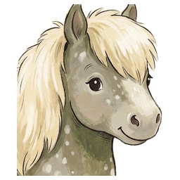

Or select two files in your file manager, right-click, and pick Redline with Fatty Lumpkin.
Step 1 of 2
Which one is the older version?
Click it and the redline starts.
Marking up your documents…
Redline ready
Compared

Fatty Lumpkin Doc CompareOr select two files in your file manager, right-click, and pick Redline with Fatty Lumpkin.
Step 1 of 2
Click it and the redline starts.